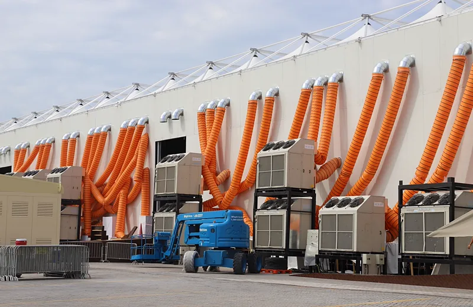

Este artigo trata só dos parâmetros de qualidade do ar interior e da interpretação do laudo. Se a dúvida é se o seu prédio está obrigado a manter plano de manutenção, a resposta está em PMOC obrigatório: quem precisa; se você já sabe que precisa e quer contratar a elaboração e a execução, o caminho é a página de PMOC na Grande Vitória. Aqui o foco é outro: o que significa cada número que volta do laboratório e o que ele diz sobre o sistema de climatização.
A referência: Resolução ANVISA RE nº 9/2003
A RE 9 da ANVISA é uma orientação técnica que estabelece padrões referenciais de qualidade do ar interior para ambientes climatizados artificialmente de uso público e coletivo — escritórios, escolas, clínicas, lojas, academias, áreas comuns de condomínio, auditórios. Ela define quais parâmetros avaliar, os valores máximos recomendados, as faixas de operação consideradas adequadas e os métodos de amostragem e análise de referência.
Um ponto que costuma gerar confusão: a RE 9 fala de ar interior, não de projeto. Quem dimensiona vazão de ar exterior, filtragem e distribuição no projeto de climatização usa a ABNT NBR 16401-3, que trata da qualidade do ar interior no projeto de instalações de ar-condicionado. As duas se conversam, mas têm papéis diferentes: a norma ABNT orienta como o sistema deve ser concebido; a resolução da ANVISA é a régua usada para verificar, com medição, se o ar entregue está dentro do aceitável.
Tabela dos parâmetros de qualidade do ar interior
Os valores abaixo são os valores máximos recomendados e as faixas de operação da RE 9/2003. O laudo compara cada resultado medido com esta tabela.
Role para o lado para ver a tabela inteira
| Parâmetro | Referência RE 9/2003 | O que indica |
|---|---|---|
| Fungos (contaminação microbiológica) | ≤ 750 ufc/m³ e relação interior/exterior (I/E) ≤ 1,5 | Proliferação dentro do sistema ou do ambiente |
| Dióxido de carbono (CO2) | ≤ 1.000 ppm | Indicador de renovação de ar exterior |
| Aerodispersóides totais | ≤ 80 µg/m³ | Poeira em suspensão; eficiência da filtragem |
| Temperatura | 23 a 26 °C (verão) · 20 a 22 °C (inverno) | Conforto térmico e ajuste do sistema |
| Umidade relativa | 40 a 65 % (verão) · 35 a 65 % (inverno) | Conforto e risco de condensação e mofo |
| Velocidade do ar | ≤ 0,25 m/s no nível de 1,5 m do piso | Corrente de ar sobre os ocupantes |
| Renovação de ar exterior | Mínimo de 27 m³/h por pessoa (17 m³/h por pessoa em ambientes de alta rotatividade) | Diluição de CO2 e de poluentes internos |
Repare que fungos têm duas condições: a concentração absoluta e a relação entre o ar de dentro e o de fora. Um resultado abaixo de 750 ufc/m³ pode reprovar se o ambiente interno estiver com muito mais fungos que o ar externo — sinal de que o problema nasce dentro do prédio. A resolução também considera inaceitável a presença de fungos patogênicos e toxigênicos, independentemente da contagem.
O que cada parâmetro indica e por que ele estoura
O valor medido só é útil quando vira diagnóstico. Na prática de campo, cada parâmetro fora da faixa aponta para uma causa típica — e é ela que o plano de correção precisa atacar.
CO2 acima de 1.000 ppm: renovação de ar insuficiente
O CO2 não é, nessas concentrações, o poluente que preocupa: ele é o indicador de renovação. Pessoas exalam CO2 continuamente; se o ar exterior entra na quantidade certa, ele é diluído. Leitura alta significa que o ar está sendo recirculado sem entrada suficiente de ar novo — e, com ele, se acumulam odores, compostos orgânicos voláteis e bioaerossóis que o laudo nem mede.
Causas comuns: sala atendida só por splits, que recirculam o ar e não trazem ar externo; tomada de ar exterior fechada, obstruída ou com damper travado; ventilador de ar exterior desligado para economizar energia; ocupação real maior que a de projeto. O limite de CO2 em ambiente climatizado costuma estourar justamente em sala de reunião, sala de aula e recepção lotada no fim da tarde.
Fungos acima do limite ou relação I/E acima de 1,5: umidade e sujeira no sistema
Fungo precisa de umidade e matéria orgânica. No sistema de climatização, os pontos clássicos são a bandeja de condensado com água parada, o dreno entupido ou sem sifão, a serpentina suja, o isolamento interno de duto encharcado e o filtro saturado que acumula matéria orgânica úmida. Fora do equipamento, infiltração, forro manchado e umidade de parede também contam. Quando a relação I/E passa de 1,5, a leitura é direta: a fonte está dentro.
Aerodispersóides acima de 80 µg/m³: filtragem
Aerodispersóides totais são as partículas em suspensão no ar. Valor alto aponta para filtragem deficiente — filtro de classe inadequada, saturado, mal encaixado ou com bypass pela moldura —, para duto sujo que devolve poeira ao ambiente ou para fonte interna de partículas, como obra, impressão em grande volume ou tomada de ar exterior próxima de via movimentada ou de descarga de exaustão.
Temperatura, umidade e velocidade do ar: ajuste e conforto
Esses três parâmetros tratam de conforto e de operação. Temperatura fora da faixa indica setpoint errado, carga térmica acima da capacidade ou equipamento com rendimento caído. Umidade relativa acima de 65 % favorece condensação e, com o tempo, mofo — o que liga este parâmetro diretamente ao de fungos. Umidade abaixo da faixa causa desconforto em mucosas e olhos. Velocidade do ar acima de 0,25 m/s na altura de 1,5 m quase sempre é difusor mal posicionado ou regulado, jogando o jato direto sobre as estações de trabalho.

Como é feita a coleta para a análise de qualidade do ar
A análise de qualidade do ar combina medições de leitura direta no local com amostras enviadas a laboratório. O procedimento segue os métodos de referência da própria RE 9:
- Pontos por área: a quantidade de pontos de amostragem cresce com a área climatizada, conforme tabela da resolução. Os pontos são distribuídos para representar os ambientes atendidos, com prioridade para os de maior ocupação e os mais afastados da insuflação.
- Altura de coleta: as amostras são tomadas na zona de respiração, na altura de referência de 1,5 m do piso, longe de portas, janelas e da saída direta dos difusores.
- Amostra externa de referência: coleta-se ao menos uma amostra do ar exterior, próxima à tomada de ar do sistema. É ela que permite calcular a relação I/E dos fungos e separar o que vem de fora do que é gerado dentro.
- Fungos: amostrador de ar por impactação sobre meio de cultura, com incubação e contagem em laboratório.
- Aerodispersóides: bomba de amostragem com filtro, analisado por gravimetria.
- CO2, temperatura, umidade e velocidade do ar: instrumentos de leitura direta, com o ambiente em condição normal de uso e ocupação.
O último item pesa mais do que parece. Medir CO2 com a sala vazia, às 8 h da manhã, produz um laudo bonito e inútil. A coleta precisa acontecer em horário de ocupação representativa e com o sistema operando como opera no dia a dia. Os instrumentos devem ter calibração válida, e o laudo precisa registrar data, horário, pontos, condições de ocupação e o responsável técnico — no formato de laudo técnico com ART, e não como planilha solta de resultados.
Periodicidade da análise de qualidade do ar
A referência usual de mercado para ambientes climatizados de uso coletivo é análise semestral, com frequência maior em ambientes críticos — área de saúde, laboratório, manipulação de alimentos — ou quando há histórico de reprovação. Três situações justificam uma análise fora do calendário:
- depois de uma correção feita por causa de laudo reprovado, para comprovar o resultado;
- depois de reforma que altere layout, ocupação ou a rede de dutos;
- quando há queixa recorrente dos ocupantes — dor de cabeça, sonolência, irritação de olhos e vias respiratórias, cheiro de mofo.
A periodicidade adotada deve estar escrita no plano de manutenção, junto com as demais rotinas do sistema. Em prédio residencial com áreas comuns climatizadas, ela entra no mesmo calendário da manutenção predial do condomínio, para não depender da memória do síndico.
Laudo de qualidade do ar reprovado: o que fazer
Um laudo de qualidade do ar reprovado não é multa nem interdição automática: é um diagnóstico. O erro comum é tratar o sintoma — trocar o filtro e medir de novo — sem entender por que o parâmetro saiu da faixa. A sequência que funciona:
- Identificar o parâmetro e o ponto. Reprovação em um ponto isolado sugere causa local (um equipamento, um difusor, uma sala superlotada); reprovação generalizada aponta para a central, para a tomada de ar ou para a rotina de manutenção.
- Relacionar com a causa provável. CO2 leva à verificação da vazão de ar exterior; fungos, à inspeção de bandeja, dreno, serpentina, isolamento e pontos de umidade; aerodispersóides, à classe, ao estado e à vedação dos filtros e à limpeza dos dutos.
- Executar a correção e registrar. Limpeza e higienização, troca de filtro, desobstrução de dreno, regulagem de damper, instalação de ventilação mecânica de ar exterior onde não existe. Cada ação vai para o registro de manutenção com data e responsável.
- Reamostrar. Nova coleta nos pontos reprovados, nas mesmas condições de ocupação, para fechar a não conformidade com evidência.
Quando a correção esbarra em limitação física — prédio sem nenhuma entrada de ar externo, rede de dutos subdimensionada, tomada de ar próxima de descarga de exaustão —, o problema deixa de ser manutenção e passa a ser projeto. Nesses casos a solução costuma envolver ventilação mecânica dedicada ou revisão da exaustão e dos dutos, dimensionadas com a NBR 16401-3 como referência.
Relação entre a análise de qualidade do ar e o PMOC
O PMOC é o plano de manutenção, operação e controle do sistema de climatização; a análise de qualidade do ar é a verificação de resultado desse plano. Uma rotina de manutenção bem executada deve produzir laudos dentro da faixa; laudos reprovados em sequência mostram que o plano não está sendo cumprido ou está mal dimensionado para o sistema real.
Por isso os dois documentos precisam andar juntos: o plano define rotinas e periodicidades, o registro de execução comprova o que foi feito, e o laudo mostra o efeito no ar respirado. Em fiscalização da vigilância sanitária, o conjunto é o que conta — PMOC sem laudo de qualidade do ar, ou laudo sem plano por trás, deixa a comprovação incompleta. A mesma lógica vale para outros sistemas que o responsável técnico acompanha no prédio, como câmaras frias em cozinhas e supermercados, que também dependem de dreno, bandeja e rotina de limpeza.
Perguntas frequentes sobre parâmetros de qualidade do ar interior
Qual o limite de CO2 em ambiente climatizado?
A Resolução ANVISA RE nº 9/2003 recomenda no máximo 1.000 ppm de dióxido de carbono no ar interior. O CO2 funciona como indicador de renovação: acima desse valor, o sistema está trazendo ar exterior insuficiente para a ocupação do ambiente.
O que significa a relação I/E de fungos no laudo?
É a razão entre a concentração de fungos medida no ar interior e a medida no ar exterior de referência. A RE 9 recomenda relação de no máximo 1,5, além do limite absoluto de 750 ufc/m³. Relação acima de 1,5 indica que a contaminação está sendo gerada dentro do prédio, tipicamente em bandeja de condensado, dreno, serpentina ou pontos de umidade.
Quantos pontos de coleta são necessários na análise de qualidade do ar?
A quantidade de pontos cresce com a área climatizada, conforme tabela da própria RE 9, e sempre inclui ao menos uma amostra do ar exterior como referência. Os pontos são distribuídos para representar os ambientes atendidos, com coleta na altura de 1,5 m do piso e em condição normal de ocupação.
De quanto em quanto tempo deve ser feita a análise de qualidade do ar?
A referência usual para ambientes climatizados de uso coletivo é semestral, com frequência maior em ambientes críticos como área de saúde, laboratório e manipulação de alimentos. Também se faz nova análise depois de corrigir um laudo reprovado, depois de reforma que altere ocupação ou dutos e quando há queixa recorrente dos ocupantes.
Meu laudo de qualidade do ar reprovou. E agora?
Identifique qual parâmetro e qual ponto reprovaram, relacione com a causa provável no sistema, execute a correção registrando cada ação no plano de manutenção e faça nova coleta nos pontos reprovados para comprovar o resultado. Se a causa for física, como ausência de entrada de ar exterior, a correção passa a ser de projeto.
Precisa disso resolvido por engenharia habilitada?
A Axial Engenharia faz análise de qualidade do ar interior com coleta em campo, laudo com ART e plano de correção quando o resultado reprova, integrada ao PMOC do sistema. Atendemos presencialmente Vitória, Vila Velha, Serra, Cariacica, Viana, Guarapari e Fundão, com deslocamento programado para Anchieta, Aracruz e Linhares. Mande pelo WhatsApp a área climatizada, o número de ocupantes e o tipo de sistema, e o escopo volta no mesmo dia útil.